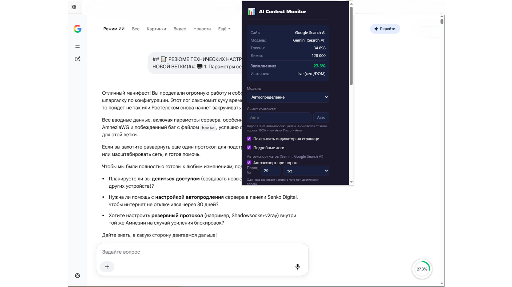
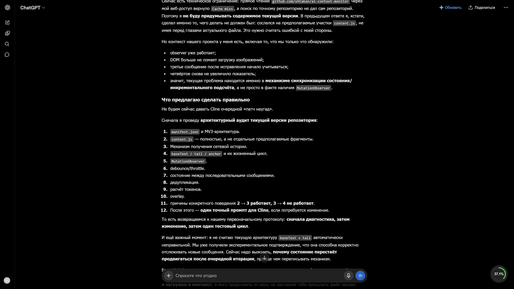
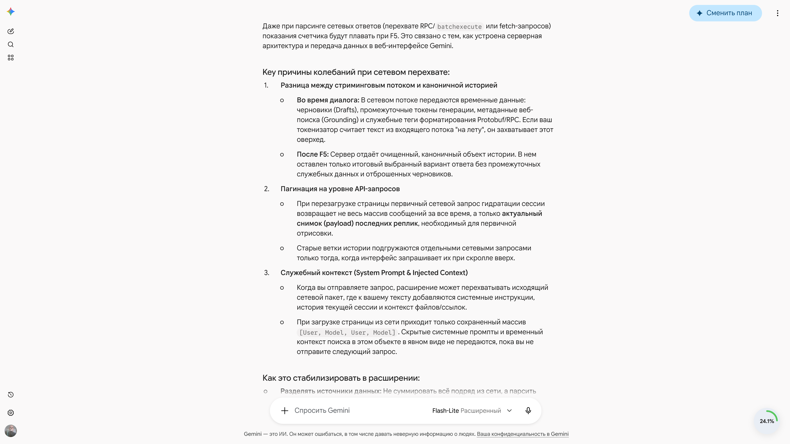
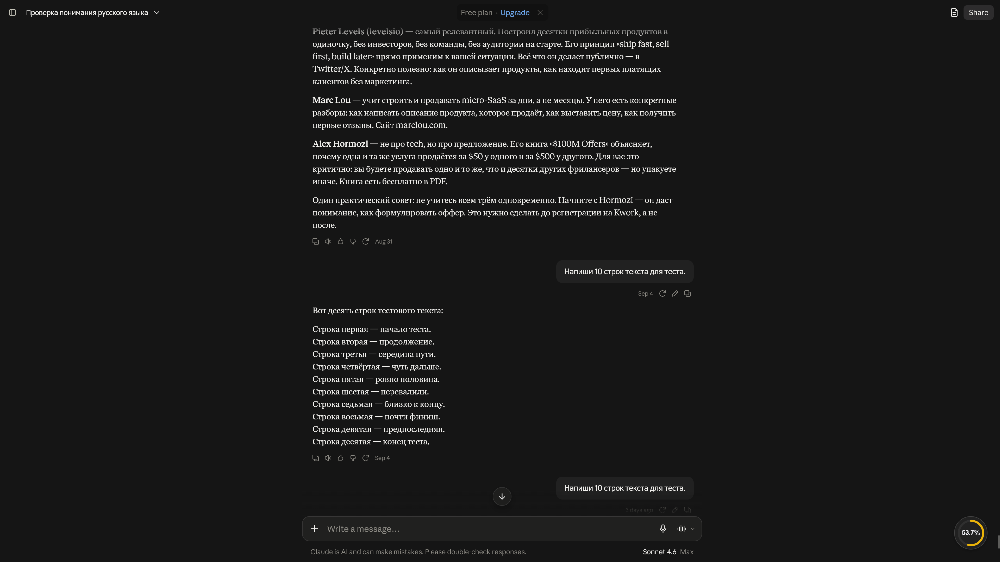
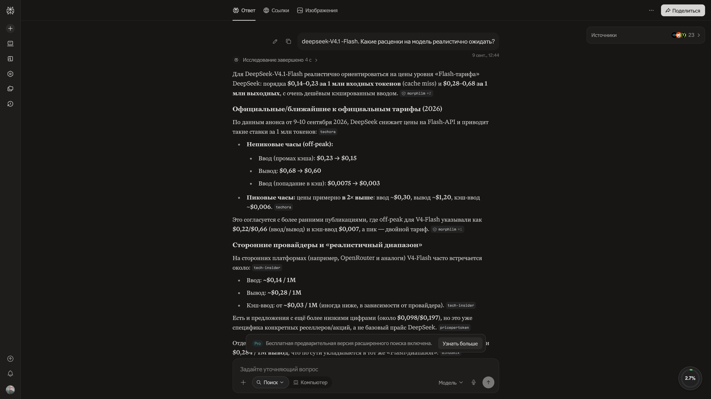

Chrome-расширение для мониторинга заполнения контекстного окна ИИ-моделей
Показывает процент заполнения контекстного окна от лимита в реальном времени.
История диалога подтягивается автоматически из сети, без прокрутки чата.
Процент и цвет индикатора обновляются с каждым новым сообщением в диалоге.
Модель определяется автоматически по данным сайта — не нужно настраивать вручную.
chrome://extensions в адресной строке браузера.
Для Microsoft Edge шаги те же, только откройте edge://extensions. Обновление: скачайте новый ZIP со страницы релизов и повторите шаги 2–5 либо нажмите «Обновить» на плитке расширения.




